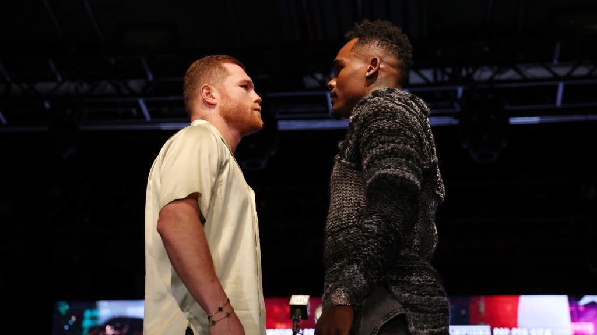

Canelo Álvarez vs. Jermell Charlo: qué esperar, cartelera, horarios, cómo ver en vivo por TV e internet

Los boxeadores Saúl "Canelo" Álvarez y Jermell Charlo se enfrentarán en Las Vegas para una pelea histórica: el mexicano defenderá sus títulos mundiales indiscutidos de peso supermediano contra el campeón mundial indiscutido de peso mediano júnior. Los pugilistas hicieron su presentación oficial en Las Vegas esta semana. En el caso del Canelo, los aficionados lo recibieron incluso con mariachis, que cantaron en su honor la ranchera de José Alfredo Jiménez "El rey", mientras subía al escenario a dar sus primeras declaraciones.